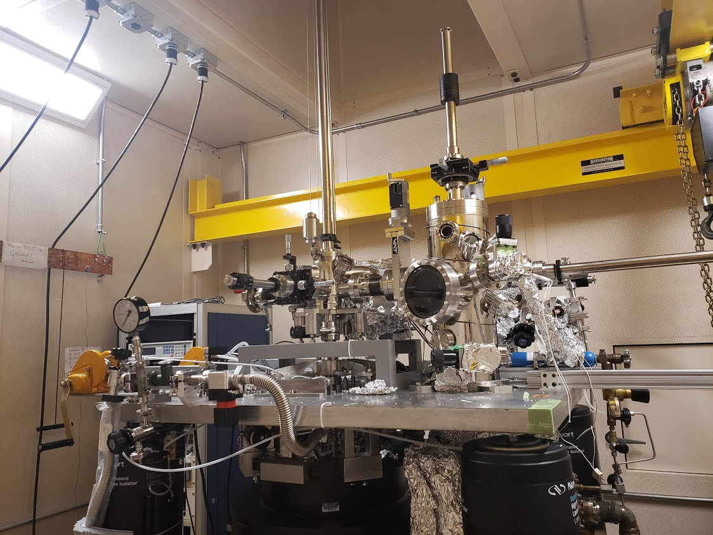
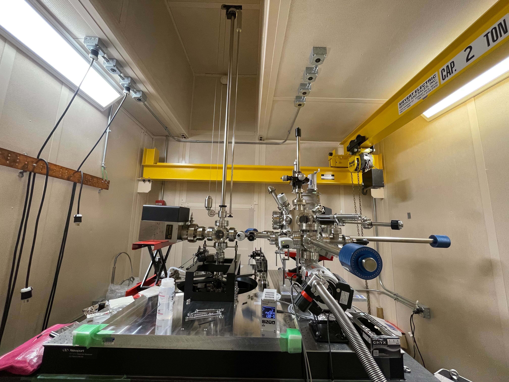
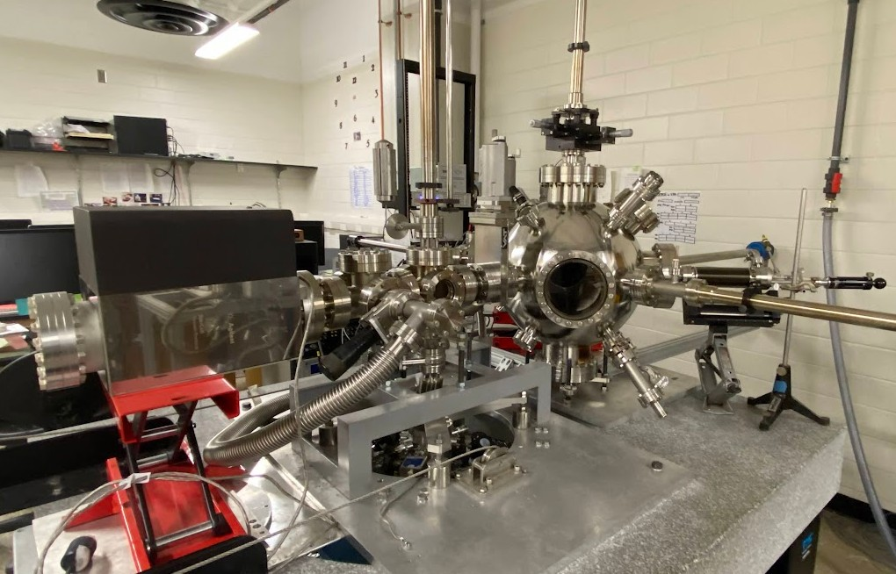
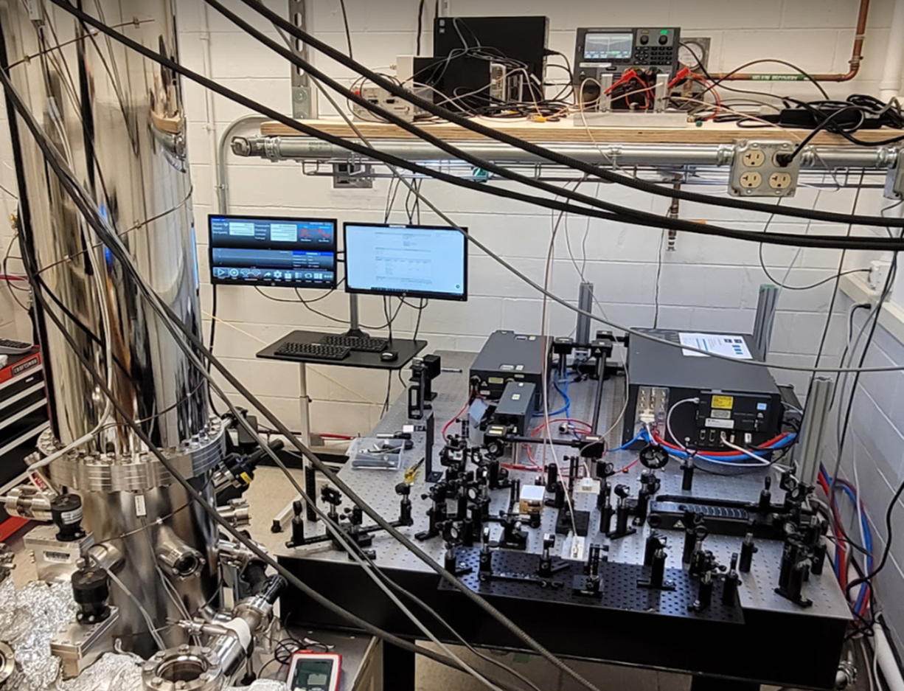
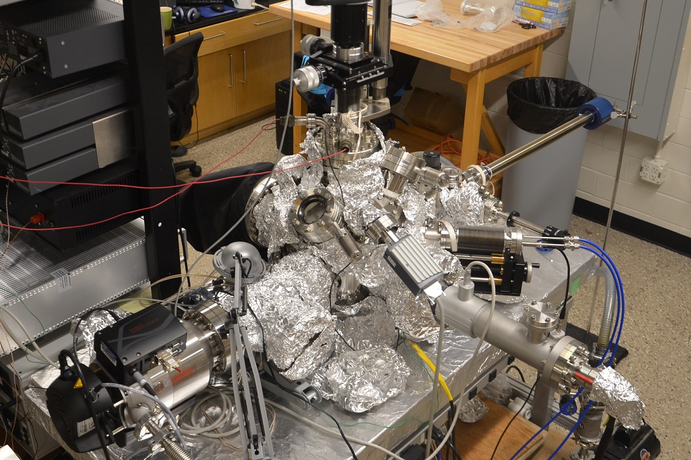
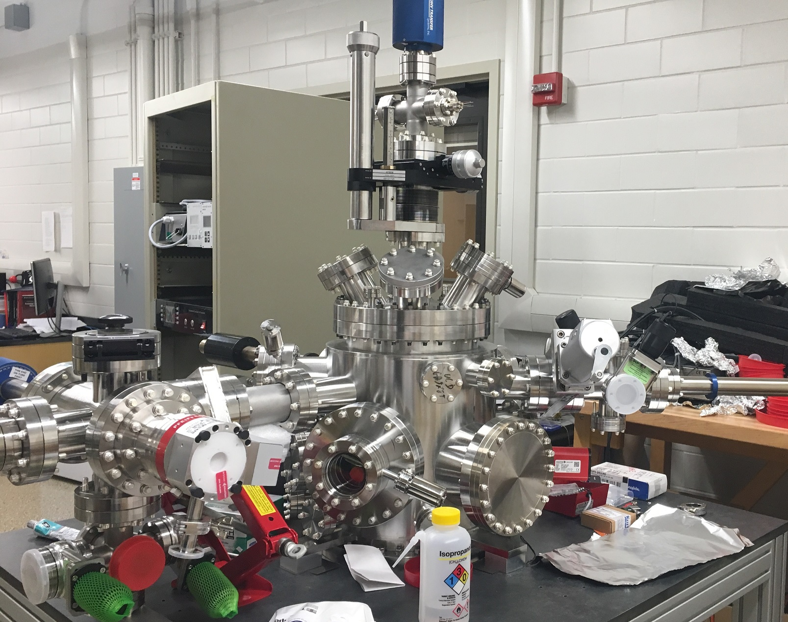
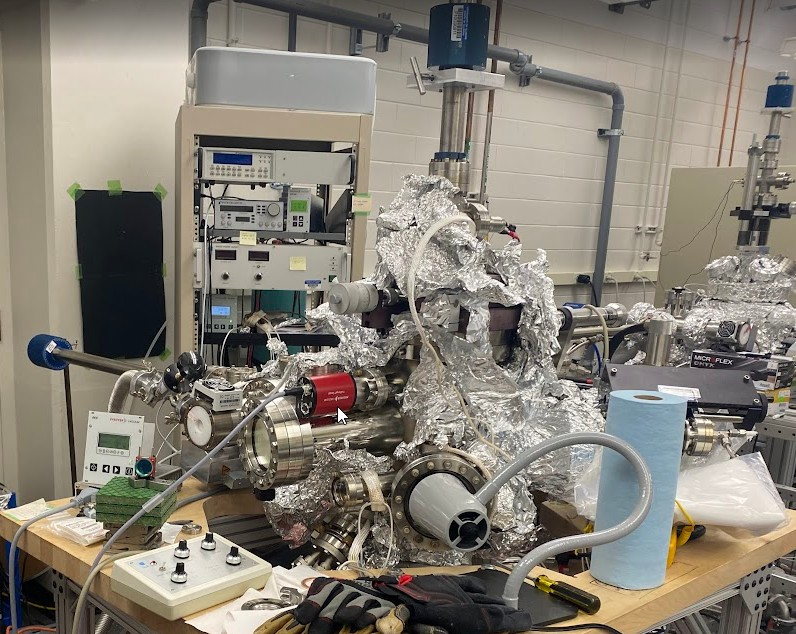

The Lab
Located in the basement of the Materials Research Laboratory at UIUC, our lab houses five scanning tunneling microscopes and three molecular beam epitaxy growth chambers.
These state-of-the-art machines allow for immediate and in-depth study of the most interesting material systems. Our facilities allow for a diverse range of studies, whether it be of a thin film grown in one of our MBE chambers or a single crystal grown by a collaborator. All of our STMs are built with a combination of Unisoku parts and parts made in house. The MBEs are entirely homemade, built by former graduate students Kane Scipioni (MBE 1) and Guannan Chen (MBE 2), and current students Yun-Tzu Hsu, Rachel Birchmier, and Marisa Romanelli (MBE 3).

300 mK, 11 T
The premier STM in the Madhavan Lab, this STM is capable of achieving a temperature of 300 mK and a magnetic field of 11 Tesla. Enclosed in a soundproof room, this instrument is capable of taking high-quality low-noise measurements for several days at a time. Typically used to study cleaved samples, this STM is also used to examine superconducting thin films grown within the group.

300 mK, 3D Magnetic Field (1 T, 4 T, 9 T)
As the newest STM in the Madhavan Lab, STM 2 features the ability to apply a magnetic field from 3 different directions with 1 T, 4 T, and 9 T respectively. This system was built and debugged by Zhen Zhu and Kaiming Liu.

1.7 K, 7.5 T
Originally repurposed from the upgrade of STM 1, this STM might be the first thing you see as you walk into the lab. Capable of reaching 1.7 K with a 7.5 T magnetic field, this STM was recently redesigned and assembled by Marisa Romanelli, Miles Knutdson, and August Schwoebel. Someday, we hope to enclose this STM in a soundproof room.

4 K Tabletop
This STM closely resembles a commercial Unisoku design and is notable for its very low helium consumption. Used especially for thin film growth, the ease of use and optical approach make it ideal for characterization of thin films grown within the group. Additionally, the electronic connections of this STM were designed to facilitate gating of thin films, an important research thrust of the group.

4 K Hybrid STM
Also called the Hybrid STM within the group, this STM is internally praised for its stability and low-noise levels. Operating at liquid helium temperatures and enclosed within a soundproof room atop a tonne of granite, this STM has been responsible for some of the group's highest resolution measurements. At times this STM has had a small growth chamber attached, giving it the "Hybrid" name. This STM was recently rebuilt and debugged by Yun-Tzu Hsu and Rachel Birchmier.

Molecular Beam Epitaxy — Tellurides
The first MBE growth chamber of the group, this MBE specializes in the growth of topological samples and tellurides. Current sources include Te, Bi, Sn, W, Sb, and SnTe. Sources can be changed to match the needs of a research project. Crystal growth can be monitored in-situ by RHEED.

Molecular Beam Epitaxy — Selenides
Packed with seven sources for growth, this MBE has a specially designed sample holder to enable collaboration with other research groups at UIUC. While MBE 1 focuses on the growth of tellurides, this MBE focuses on the growth of selenides. It also has a RHEED gun that enables in-situ monitoring of sample growth.

Molecular Beam Epitaxy
Work in progess...